Act I · The tension
Chapter 6 gave us a number: in 29 houses sold in Davis, California, each extra square foot goes with $73.77 more in price. A different sample of 29 houses would give a different number.
So the real question is not “what is the slope?” but “how much should we trust it?” Inference turns one estimate into a range (a confidence interval) and a verdict (a hypothesis test).
Every result in this deck answers three questions: Is it precise? Is it real? Does it matter? And a fourth one underneath: is the standard error honest?
| Part | Question | Tool | Headline result |
|---|---|---|---|
| 7.1 | Do bigger houses sell for more? | OLS, 29 houses | \(b_2 = 73.77\) $/sq ft |
| 7.2 | How far is the slope from zero, in noise units? | \(t\)-statistic | \(t = 6.60\) |
| 7.3 | Which slopes can the data not rule out? | Confidence interval | [50.84, 96.70] |
| 7.4 | Does size matter at all? | Test of \(\beta_2 = 0\) | reject, \(p < 0.001\) |
| 7.5 | Is the slope $90 per square foot? | Two-sided test | do not reject, \(p = 0.158\) |
| 7.6 | Is it less than $90? | One-sided test | do not reject at 5%, \(p = 0.079\) |
| 7.7 | Are the standard errors honest? | HC1 robust SEs | 11.17 → 11.33 |
| Case 1 | Capital and productivity, 108 countries | All of the above | robust SE 48% larger |
| Case 2 | Nighttime lights and development, Bolivia | All of the above | slope 3.37, robust SE 18% larger |
| Synthesis | What carries over to every regression? | Scorecard | — |
\[y_i = \beta_1 + \beta_2 x_i + u_i \qquad\text{estimated by}\qquad \hat y_i = b_1 + b_2 x_i\]
Assumptions 1–2 make \(b_2\) unbiased. Assumptions 3–4 are what the classical standard error needs; robust SEs (7.7) drop assumption 3.
Statistical significance is not economic significance. Keep both in view from the first slide to the last.
Sections 7.1–7.7 · 29 houses in Davis, California
The example · OLS on 29 house sales
Data. AED_HOUSE.DTA: sale price and characteristics of 29 houses sold in Central Davis, California, in 1999.
| Variable | Meaning | Mean | SD | Min | Max |
|---|---|---|---|---|---|
price |
sale price, dollars | 253,910 | 37,391 | 204,000 | 375,000 |
size |
house size, square feet | 1,883 | 398 | 1,400 | 3,300 |
Other columns (bedrooms, bathrooms, lotsize, age, monthsold, list) wait for multiple regression in Chapters 10–11.
\[\text{price}_i = \beta_1 + \beta_2\,\text{size}_i + u_i\]
\(\beta_2\) is the population slope: the expected price difference between houses that differ by one square foot.
!pip install -q pyfixest # pyfixest is not preinstalled in Colab
import pandas as pd # tabular data
import pyfixest as pf # OLS with R-style formulas
from scipy import stats # t-distribution: critical values, p-values
url = "https://raw.githubusercontent.com/quarcs-lab/data-open/master/AED/AED_HOUSE.DTA"
data_house = pd.read_stata(url) # 29 house sales, Davis CA, 1999
print(data_house[["price", "size"]].describe()) # mean, SD, min, max of the two variables
model_basic = pf.feols("price ~ size", data=data_house) # OLS, classical (iid) SEs
model_basic.summary() # coefficients, SEs, t, p, 95% CIs, R²| Variable | Coef. | SE | \(t\) | \(p\) | 95% CI |
|---|---|---|---|---|---|
| Intercept | 115,017.283 | 21,489.360 | 5.35 | < 0.001 | [70,924.76, 159,109.81] |
size |
73.771 | 11.175 | 6.60 | < 0.001 | [50.84, 96.70] |
N = 29 · classical (iid) SEs · \(R^2 = 0.617\) · degrees of freedom \(n - 2 = 27\)
One table already answers the chapter’s questions. The rest of 7.1–7.7 explains where each column comes from and how to read it.
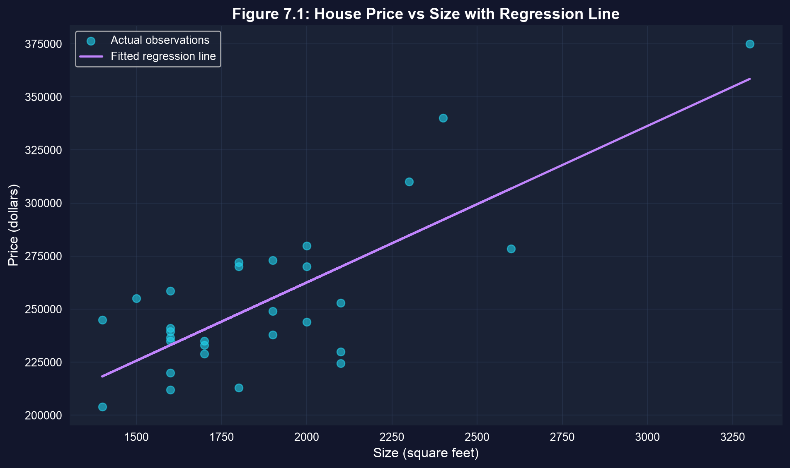
Inference quantifies the scatter: the larger the vertical gaps, the less precisely the slope is pinned down.
Standard error of the slope · the \(T(n-2)\) distribution
\[\operatorname{se}(b_2) = \frac{s_e}{\sqrt{\sum_{i=1}^{n}(x_i - \bar x)^2}}\]
Standard deviation describes the spread of the data; standard error describes the spread of the estimate across samples.
\[\operatorname{se}(b_2) = \frac{s_e}{\sqrt{\sum (x_i - \bar x)^2}} \approx \frac{s_e}{\sqrt{n}\;s_x}\]
| Knob | Turn it up | Effect on \(\operatorname{se}(b_2)\) |
|---|---|---|
| Residual spread \(s_e\) | worse fit, more noise | larger |
| Sample size \(n\) | more houses | smaller, at rate \(1/\sqrt n\): quadruple \(n\) to halve the SE |
| Spread of \(x\), \(s_x\) | wider range of sizes | smaller: extreme \(x\) values pin down the slope |
A precise slope needs a tight fit, many observations and a wide spread in \(x\). All three are design choices, not luck.
!pip install -q pyfixest # pyfixest is not preinstalled in Colab
import numpy as np # square roots and sums
import pandas as pd # tabular data
import pyfixest as pf # OLS with R-style formulas
url = "https://raw.githubusercontent.com/quarcs-lab/data-open/master/AED/AED_HOUSE.DTA"
data_house = pd.read_stata(url); model_basic = pf.feols("price ~ size", data=data_house)
n = len(data_house) # 29 houses
e = model_basic.resid() # residuals y - y_hat
s_e = np.sqrt((e**2).sum() / (n - 2)) # standard error of the regression
x = data_house["size"] # the regressor
sxx = ((x - x.mean())**2).sum() # total variation in x
se_formula = s_e / np.sqrt(sxx) # classical se(b2), exact
se_shortcut = s_e / (np.sqrt(n) * x.std()) # chapter's shortcut with sqrt(n)
print(s_e, np.sqrt(sxx), se_formula, se_shortcut, model_basic.se()["size"])| Ingredient | Value |
|---|---|
| \(s_e\), standard error of the regression | 23,550.66 |
| \(\sqrt{\sum (x_i - \bar x)^2}\) | 2,107.46 |
| \(s_x\), SD of size | 398.27 |
| \(\operatorname{se}(b_2) = s_e / \sqrt{\sum (x_i - \bar x)^2}\) | 11.175 |
| Shortcut \(s_e / (\sqrt{n}\, s_x)\) | 10.98 |
pyfixest se()["size"] |
11.175 |
\(23{,}550.66 / 2{,}107.46 = 11.175\): nothing in the regression table is a black box.
\[t = \frac{b_2 - \beta_2^{*}}{\operatorname{se}(b_2)} \;\sim\; T(n-2) \quad\text{under } H_0: \beta_2 = \beta_2^{*}\]
\(t = 6.60\) means the slope sits 6.6 of its own standard errors above zero.
# continues from the previous block (model_basic already fitted)
coef_size = model_basic.coef()["size"] # b2
se_size = model_basic.se()["size"] # se(b2)
t_stat_size = model_basic.tstat()["size"] # t for H0: beta2 = 0
p_value_size = model_basic.pvalue()["size"] # two-sided p-value
print(f"t = b2 / se(b2) = {coef_size:.4f} / {se_size:.4f} = {t_stat_size:.4f}")
print(f"p-value: {p_value_size:.6f}") # prints 0.000000 at 6 decimalsOutput: \(t = 73.7710 / 11.1749 = 6.6015\); \(p = 4.4 \times 10^{-7}\), which prints as 0.000000.
| Question | Answer for the house slope |
|---|---|
| Is it precise? | \(\operatorname{se}(b_2) = 11.17\): about 15% of the estimate |
| Is it real? | \(t = 6.60\), far beyond any conventional cutoff |
| Does it matter? | to be judged in 7.4 |
| Is the SE honest? | classical SE so far; checked in 7.7 |
Precision is relative: an SE of 11 is small next to a slope of 74, and it would be huge next to a slope of 5.
Estimate ± critical value × standard error
\[b_2 \;\pm\; t_{n-2,\,\alpha/2}\times\operatorname{se}(b_2)\]
\[73.77 \;\pm\; 2.052 \times 11.17 \;=\; 73.77 \pm 22.93 \;=\; [50.84,\ 96.70]\]
The interval spans $46 per square foot: size clearly matters, but its price is pinned down only to “somewhere between $51 and $97”.
!pip install -q pyfixest # pyfixest is not preinstalled in Colab
import pandas as pd, pyfixest as pf # data and OLS
from scipy import stats # Student's t quantiles
url = "https://raw.githubusercontent.com/quarcs-lab/data-open/master/AED/AED_HOUSE.DTA"
data_house = pd.read_stata(url); model_basic = pf.feols("price ~ size", data=data_house)
print(model_basic.confint()) # 95% CIs for intercept and slope
df = len(data_house) - 2 # 27 degrees of freedom
t_crit = stats.t.ppf(0.975, df) # 2.5% in the upper tail
b2, se2 = model_basic.coef()["size"], model_basic.se()["size"]
ci_lower, ci_upper = b2 - t_crit * se2, b2 + t_crit * se2 # estimate ± margin
print(t_crit, t_crit * se2, ci_lower, ci_upper)
z_lo, z_hi = b2 - 1.96 * se2, b2 + 1.96 * se2 # normal-based interval, for comparisonconfint() exactly| Quantity | \(t(27)\)-based | Normal-based (for comparison) |
|---|---|---|
| Critical value | 2.052 | 1.960 |
| Margin of error | 22.93 | 21.90 |
| 95% CI for \(\beta_2\) | [50.84, 96.70] | [51.87, 95.67] |
confint() returns [50.84, 96.70] for size and [70,924.76, 159,109.81] for the intercept · normal column computed for these slides
With 27 degrees of freedom, the correct interval is 4.7% wider than the normal one: a small but real penalty for estimating \(\sigma_u\).
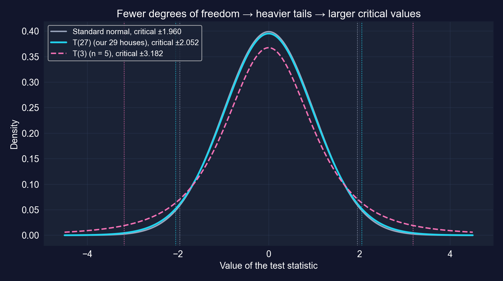
| \(n\) | df | \(t_{\text{df},\,0.025}\) | vs 1.960 |
|---|---|---|---|
| 5 | 3 | 3.182 | +62% |
| 10 | 8 | 2.306 | +18% |
| 29 | 27 | 2.052 | +5% |
| 30 | 28 | 2.048 | +5% |
| 100 | 98 | 1.984 | +1% |
| \(\infty\) | — | 1.960 | 0% |
Fewer degrees of freedom mean heavier tails, larger critical values and wider intervals. Above about 100 observations the difference is negligible.
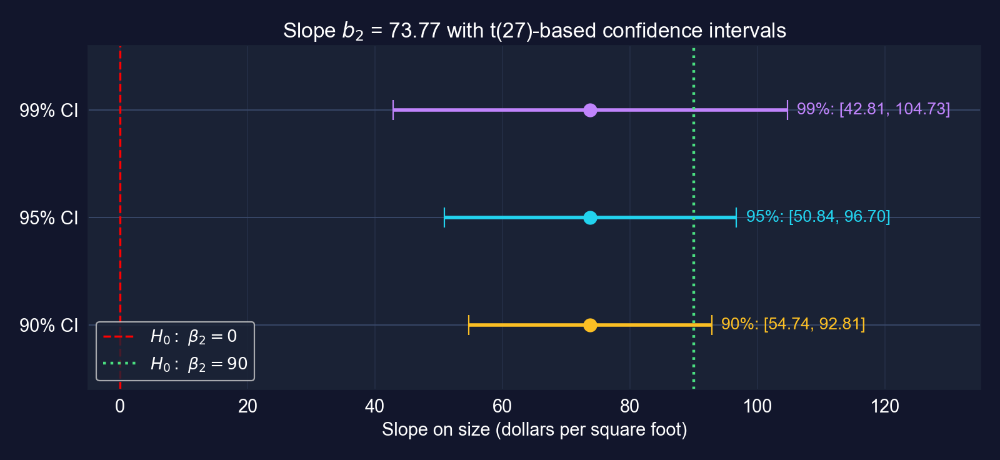
The same slope with 90%, 95% and 99% intervals. Zero is outside all three; 90 is inside all three.
90%: [54.74, 92.81] · 95%: [50.84, 96.70] · 99%: [42.81, 104.73]. Asking for more confidence buys a wider, less informative range.
Width depends on three things: the confidence level, the sample size (through both the SE and the critical value) and the residual noise.
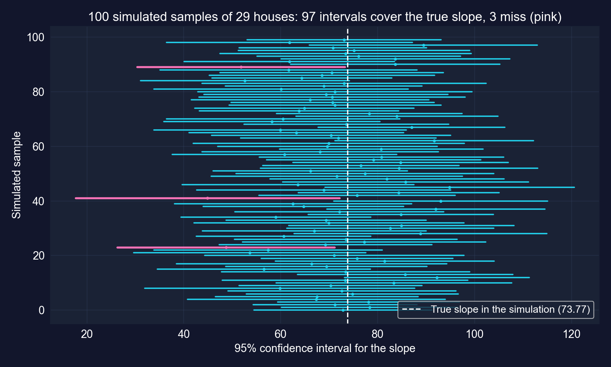
In this simulation, 97 of 100 intervals contain the true slope and 3 miss it. The 95% is a property of the procedure.
# continues from the previous block (pd, pf, stats already imported)
df_artificial = pd.DataFrame({"x": [1, 2, 3, 4, 5], # the chapter's artificial data
"y": [1, 2, 2, 2, 3]})
model_artificial = pf.feols("y ~ x", data=df_artificial) # OLS on 5 points
coef_x, se_x = model_artificial.coef()["x"], model_artificial.se()["x"]
t_crit_art = stats.t.ppf(0.975, 5 - 2) # only 3 degrees of freedom
print(coef_x, se_x, t_crit_art) # slope, SE, critical value
print(coef_x - t_crit_art * se_x, coef_x + t_crit_art * se_x) # 95% CI| \(b_2\) | SE | \(t\) | \(t_{3,\,0.025}\) | 95% CI |
|---|---|---|---|---|
| 0.400 | 0.115 | 3.46 | 3.182 | [0.03, 0.77] |
Even with \(t = 3.46\), the interval runs from almost zero to almost double the estimate: with 3 degrees of freedom the critical value is 3.182, not 1.96.
Tests of statistical significance · \(p\)-values · economic significance
\[H_0: \beta_2 = 0 \qquad\text{vs.}\qquad H_a: \beta_2 \neq 0, \qquad t = \frac{b_2}{\operatorname{se}(b_2)} \sim T(n-2) \text{ under } H_0\]
A regressor “matters” statistically when its coefficient is too far from zero to blame on sampling noise.
!pip install -q pyfixest # pyfixest is not preinstalled in Colab
import pandas as pd, pyfixest as pf; from scipy import stats
url = "https://raw.githubusercontent.com/quarcs-lab/data-open/master/AED/AED_HOUSE.DTA"
data_house = pd.read_stata(url); model_basic = pf.feols("price ~ size", data=data_house)
t_stat_size = model_basic.tstat()["size"] # b2 / se(b2)
p_value_size = model_basic.pvalue()["size"] # Pr[|T27| > |t|]
t_crit = stats.t.ppf(0.975, len(data_house) - 2) # 5% two-sided cutoff
print(t_stat_size, p_value_size, t_crit)
print("Reject H0" if p_value_size < 0.05 else "Fail to reject H0")| \(H_0\) | \(t\) | \(p\) (two-sided) | Critical value, 5% | Decision |
|---|---|---|---|---|
| \(\beta_2 = 0\) | 6.60 | \(4.4\times 10^{-7}\) | ±2.052 | reject |
Conclusion in words: in Davis in 1999, larger houses sold for more, and the association is far too strong to be a fluke of this sample.
Statistical significance
Economic significance
Report the magnitude and its confidence interval, not just the stars. The interval answers both questions at once.
| Comparison | Implied price difference | Using the 95% CI |
|---|---|---|
| 10 extra square feet | $738 | — |
| 100 extra square feet | $7,377 | [$5,084, $9,670] |
| One SD of size (398 sq ft) | $29,381 | 11.6% of the mean price |
100 sq ft rows: chapter · CI and one-SD rows computed for these slides from \(b_2\) and its interval
Even the lower end of the interval, about $5,100 per 100 square feet, is a meaningful sum on a $254,000 house: the effect is both statistically and economically significant.
Two-sided tests of a specific value · the CI–test duality
\[H_0: \beta_2 = 90 \qquad\text{vs.}\qquad H_a: \beta_2 \neq 90\]
\[t = \frac{b_2 - 90}{\operatorname{se}(b_2)} = \frac{73.77 - 90}{11.17} = -1.452\]
Only the numerator changes: the test asks how many standard errors the estimate is from the claimed value.
!pip install -q pyfixest # pyfixest is not preinstalled in Colab
import pandas as pd, pyfixest as pf; from scipy import stats
url = "https://raw.githubusercontent.com/quarcs-lab/data-open/master/AED/AED_HOUSE.DTA"
data_house = pd.read_stata(url); model_basic = pf.feols("price ~ size", data=data_house)
null_value, df = 90, len(data_house) - 2 # claimed slope; 27 degrees of freedom
coef_size, se_size = model_basic.coef()["size"], model_basic.se()["size"]
t_stat_90 = (coef_size - null_value) / se_size # distance from 90 in SEs
p_value_90 = 2 * (1 - stats.t.cdf(abs(t_stat_90), df)) # two-sided p-value
print(t_stat_90, p_value_90, stats.t.ppf(0.975, df)) # t, p, critical value
print(model_basic.confint().loc["size"]) # is 90 inside the CI?| Value | |
|---|---|
| \(t\) | −1.452 |
| \(p\) (two-sided) | 0.158 |
| Critical value | ±2.052 |
| 95% CI | [50.84, 96.70] |
| Decision at 5% | do not reject |
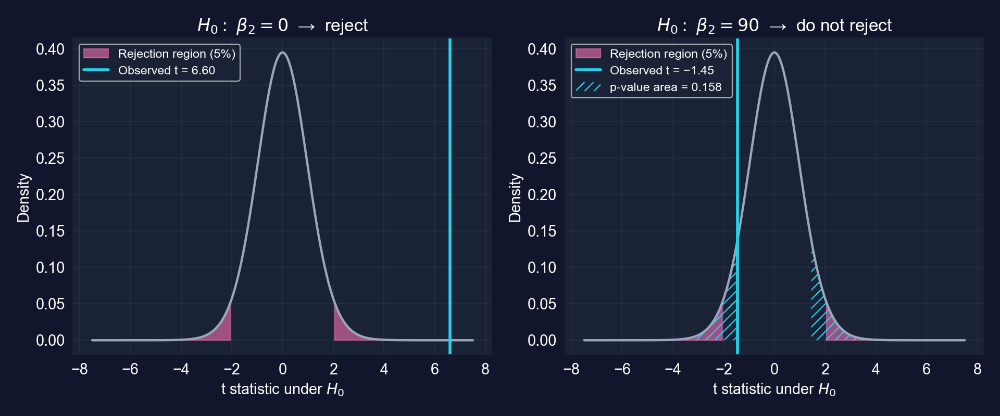
\(p = 0.158 > 0.05\) and 90 lies inside [50.84, 96.70]: two ways of saying the same thing.
Failing to reject is a statement about the data’s power, not proof of the null. Report the interval and every plausible value is visible at once.
One-sided directional tests
| Test | \(H_0\) | \(H_a\) (the claim) | Reject when | \(p\)-value |
|---|---|---|---|---|
| Upper tail | \(\beta_2 \le \beta_2^{*}\) | \(\beta_2 > \beta_2^{*}\) | \(t > t_{n-2,\,\alpha}\) | \(\Pr[T_{n-2} > t]\) |
| Lower tail | \(\beta_2 \ge \beta_2^{*}\) | \(\beta_2 < \beta_2^{*}\) | \(t < -t_{n-2,\,\alpha}\) | \(\Pr[T_{n-2} < t]\) |
A one-sided test has more power in the predicted direction, and none at all in the other.
!pip install -q pyfixest # pyfixest is not preinstalled in Colab
import pandas as pd, pyfixest as pf; from scipy import stats
url = "https://raw.githubusercontent.com/quarcs-lab/data-open/master/AED/AED_HOUSE.DTA"
data_house = pd.read_stata(url); model_basic = pf.feols("price ~ size", data=data_house)
df = len(data_house) - 2 # 27 degrees of freedom
t_stat_90 = (model_basic.coef()["size"] - 90) / model_basic.se()["size"]
p_value_upper = 1 - stats.t.cdf(t_stat_90, df) # Ha: beta2 > 90 (right tail)
p_value_lower = stats.t.cdf(t_stat_90, df) # Ha: beta2 < 90 (left tail)
t_crit_one = stats.t.ppf(0.95, df) # one-sided 5% critical value
print(t_stat_90, p_value_upper, p_value_lower, t_crit_one)| Lower tail | Upper tail | |
|---|---|---|
| \(H_a\) | \(\beta_2 < 90\) | \(\beta_2 > 90\) |
| \(t\) | −1.452 | −1.452 |
| \(p\) | 0.079 | 0.921 |
| Cutoff, 5% | −1.703 | +1.703 |
| Decision | do not reject | do not reject |
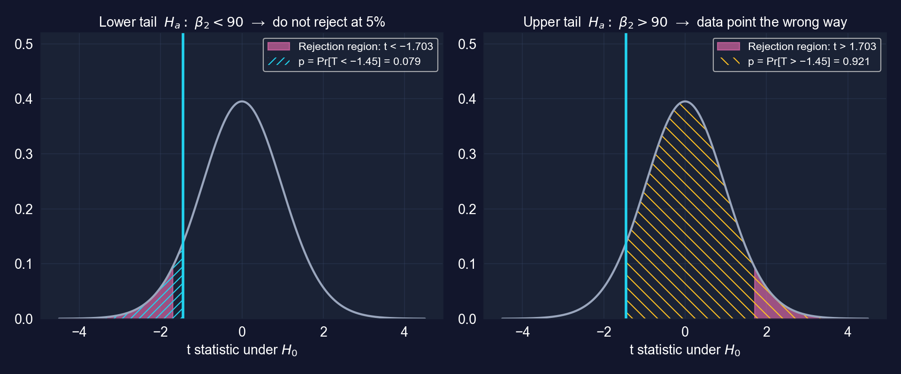
The evidence that the slope is below $90 is suggestive (\(p = 0.079\)): not enough at 5%, enough at 10%. The evidence that it is above $90 is nil (\(p = 0.921\)).
An earlier version of this deck halved the \(p\)-value for \(H_a: \beta_2 > 90\). That is wrong: with \(b_2 = 73.77 < 90\) the correct one-sided \(p\) is 0.921.
Heteroskedasticity · HC1 robust standard errors · residual diagnostics
Assumption 3 says \(\operatorname{Var}[u_i \mid x_i] = \sigma_u^2\) for every observation. Heteroskedasticity: \(\operatorname{Var}[u_i \mid x_i] = \sigma_i^2\) varies with \(i\).
| What | Under heteroskedasticity |
|---|---|
| Coefficient \(b_2\) | still unbiased and consistent |
| Classical \(\operatorname{se}(b_2)\) | wrong, too small or too large |
| \(t\), \(p\), confidence intervals | invalid (wrong size, wrong coverage) |
The fix leaves the estimate alone and repairs the uncertainty: a heteroskedasticity-robust standard error.
\[\operatorname{se}(b_2) = \frac{s_e}{\sqrt{\sum (x_i - \bar x)^2}} \qquad\qquad \operatorname{se}_{\text{HC0}}(b_2) = \frac{\sqrt{\sum e_i^2\,(x_i - \bar x)^2}}{\sum (x_i - \bar x)^2}\]
The chapter prints the HC0 formula (10.93 for the house slope), but its code and tables use HC1 (vcov="HC1", 11.33), which matches Stata’s robust.
!pip install -q pyfixest # pyfixest is not preinstalled in Colab
import pandas as pd, pyfixest as pf # data and OLS
url = "https://raw.githubusercontent.com/quarcs-lab/data-open/master/AED/AED_HOUSE.DTA"
data_house = pd.read_stata(url)
model_basic = pf.feols("price ~ size", data=data_house) # classical SEs
robust_results = pf.feols("price ~ size", data=data_house, vcov="HC1") # robust SEs
comparison_df = pd.DataFrame({
"Coefficient": model_basic.coef(), # identical in both fits
"Std. Error": model_basic.se(), # classical
"Robust SE": robust_results.se(), # HC1
"t-stat (standard)": model_basic.tstat(),
"t-stat (robust)": robust_results.tstat(),
})
print(comparison_df); robust_results.summary() # full table reports "Inference: HC1"| Variable | Coef. | Classical SE | Robust SE | Change | Robust \(t\) | Robust 95% CI |
|---|---|---|---|---|---|---|
| Intercept | 115,017.3 | 21,489.4 | 20,298.7 | −5.5% | 5.67 | [73,368, 156,667] |
size |
73.771 | 11.175 | 11.330 | +1.4% | 6.51 | [50.52, 97.02] |
N = 29 · HC1 SEs · robust \(p < 0.001\) for both coefficients · \(R^2 = 0.617\) (unchanged)
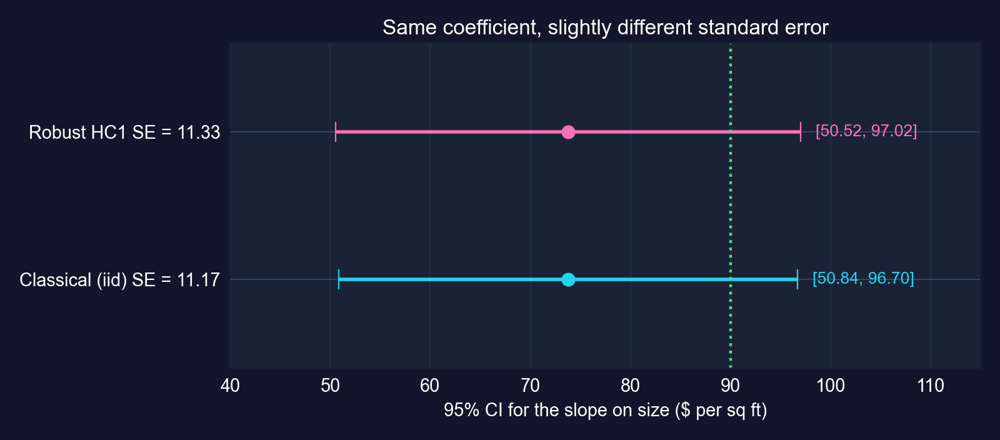
Robust inference reaches the same verdicts: size is significant (\(t = 6.51\)), and $90 is still not rejected (robust \(t = -1.43\), \(p = 0.163\)).
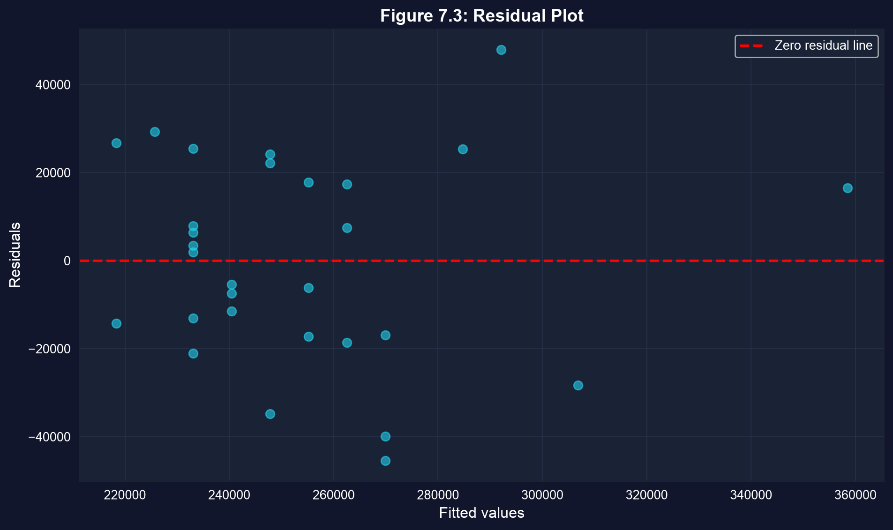
| Fitted value | Houses | Residual SD |
|---|---|---|
| at or below median | 16 | $19,258 |
| above median | 13 | $27,670 |
Split computed for these slides; ties at the median make the halves unequal.
The spread is somewhat larger for expensive houses, but there is no clear funnel, and the robust SE agrees with the classical one. With 29 points, the eye cannot settle the question; the robust SE can.
vcov="HC1") by defaultRobust SEs are free insurance: when errors are homoskedastic they agree with classical SEs; when they are not, they keep inference honest.
| Question | Answer |
|---|---|
| Is it precise? | SE 11.17 (classical), 11.33 (robust); 95% CI about $46 wide |
| Is it real? | \(t = 6.60\) (robust 6.51), \(p < 0.001\): reject \(\beta_2 = 0\) |
| Which values are plausible? | [50.84, 96.70]: $90 not rejected two-sided (\(p = 0.158\)) or one-sided at 5% (\(p = 0.079\)) |
| Does it matter? | $7,377 per 100 sq ft; even the lower CI end ($5,084) is sizeable |
| Is the SE honest? | robust SE within 1.4% of classical; residuals show no strong funnel |
A complete answer reports all five rows, not only the stars: magnitude, precision, tests, plausible range and the SE used.
The full toolkit on new data: 108 countries · 333 municipalities
Convergence Clubs data (Mendez 2020) · 2014 cross-section · Tasks 1–6
Research question. In 2014, how much higher is output per worker in countries with more capital per worker, and how precisely can we say it?
\[\text{productivity}_i = \beta_1 + \beta_2\,\text{capital}_i + u_i\]
productivity = lp, real GDP per worker (dollars); capital = kl, physical capital per worker (dollars)What we can test here is the strength and precision of a cross-country association, with the tools of 7.1–7.7.
!pip install -q pyfixest # pyfixest is not preinstalled in Colab
import pandas as pd, pyfixest as pf # data and OLS
from scipy import stats # t-distribution for manual tests
url_cc = "https://raw.githubusercontent.com/quarcs-lab/mendez2020-convergence-clubs-code-data/master/assets/dat.csv"
data_convergence = pd.read_csv(url_cc) # 108 countries x 25 years (1990-2014)
data_2014 = data_convergence[data_convergence["year"] == 2014].copy() # one cross-section
data_2014["productivity"] = data_2014["lp"] # labor productivity: GDP per worker
data_2014["capital"] = data_2014["kl"] # physical capital per worker
print(f"Sample: {len(data_2014)} countries in 2014")
print(data_2014["region"].value_counts()) # regional composition
data_2014[["productivity", "capital"]].describe() # summary statistics| Variable | Mean | SD | Min | Median | Max |
|---|---|---|---|---|---|
productivity ($ per worker) |
40,977 | 33,853 | 1,371 | 32,781 | 142,220 |
capital ($ per worker) |
165,854 | 158,299 | 2,482 | 108,046 | 552,395 |
N = 108 countries, 2014
Output per worker varies about 100-fold and capital per worker about 200-fold: plenty of variation in \(x\), which makes the slope precise, and a hint that the error variance may not be constant.
# continues from the previous block (data_2014 already built)
model_convergence = pf.feols("productivity ~ capital", data=data_2014) # classical SEs
beta2 = model_convergence.coef()["capital"] # slope
se_beta2 = model_convergence.se()["capital"] # classical SE
t_stat = model_convergence.tstat()["capital"] # t for H0: beta2 = 0
p_value = model_convergence.pvalue()["capital"] # two-sided p-value
ci_95 = model_convergence.confint().loc["capital"] # 95% CI
model_convergence.summary() # full table| Variable | Coef. | SE | \(t\) | \(p\) | 95% CI |
|---|---|---|---|---|---|
| Intercept | 7,894.468 | 1,713.521 | 4.61 | < 0.001 | [4,497.25, 11,291.69] |
capital |
0.1995 | 0.0075 | 26.63 | < 0.001 | [0.1846, 0.2143] |
N = 108 · classical (iid) SEs · \(R^2 = 0.870\) · df = 106
(d) Economically large: a one-SD difference in capital ($158,299) goes with $31,576 more output per worker, 77% of the mean.
# continues from the previous block (beta2, se_beta2, t_stat, p_value defined)
df_c = int(model_convergence._N) - len(model_convergence.coef()) # 108 - 2 = 106
t_test_05 = (beta2 - 0.5) / se_beta2 # (b) H0: beta2 = 0.5
p_value_05 = 2 * (1 - stats.t.cdf(abs(t_test_05), df=df_c)) # two-sided
null_value_c = 0.30 # (c) pessimist's bound
t_test_pessimist = (beta2 - null_value_c) / se_beta2 # distance from 0.30
p_value_pessimist_lower = stats.t.cdf(t_test_pessimist, df=df_c) # Ha: beta2 < 0.30
print(t_stat, p_value, t_test_05, p_value_05) # (a) and (b)
print(t_test_pessimist, p_value_pessimist_lower) # (c)| Hypotheses | \(t\) | \(p\) | Decision at 5% |
|---|---|---|---|
| (a) \(H_0: \beta_2 = 0\) vs \(\beta_2 \neq 0\) | 26.63 | < 0.001 | reject: capital matters |
| (b) \(H_0: \beta_2 = 0.5\) vs \(\beta_2 \neq 0.5\) | −40.12 | < 0.001 | reject: slope is far below 0.5 |
| (c) \(H_0: \beta_2 \ge 0.30\) vs \(H_a: \beta_2 < 0.30\) | −13.42 | \(6.7\times 10^{-25}\) | reject \(H_0\): evidence for \(\beta_2 < 0.30\) |
df = 106 · classical SEs, as in the chapter’s Task 2
The pessimist’s claim is not rejected; it is supported. Rejecting \(H_0: \beta_2 \ge 0.30\) is how a one-sided test confirms a claim placed in \(H_a\).
# continues from the previous block (classical fit and tests done)
robust_model = pf.feols("productivity ~ capital", data=data_2014, vcov="HC1")
se_beta2_robust = robust_model.se()["capital"] # HC1 SE
t_stat_robust = robust_model.tstat()["capital"] # robust t
pct_change = 100 * (se_beta2_robust - se_beta2) / se_beta2 # % change in SE
ci_95_robust = robust_model.confint().loc["capital"] # robust 95% CI
print(se_beta2, se_beta2_robust, pct_change, t_stat, t_stat_robust)
print(ci_95.values, ci_95_robust.values) # classical vs robust CI| Variable | Coef. | Classical SE | Robust SE | Change | Robust \(t\) | Robust 95% CI |
|---|---|---|---|---|---|---|
| Intercept | 7,894.468 | 1,713.521 | 1,356.336 | −20.8% | 5.82 | [5,205.40, 10,583.54] |
capital |
0.1995 | 0.0075 | 0.0111 | +48.4% | 17.94 | [0.1774, 0.2215] |
N = 108 · HC1 SEs · robust \(p < 0.001\) for both · classical CI for the slope: [0.1846, 0.2143]
A 48% gap is a loud signal of heteroskedasticity. Report the robust SE; the classical one claims precision the data do not have.
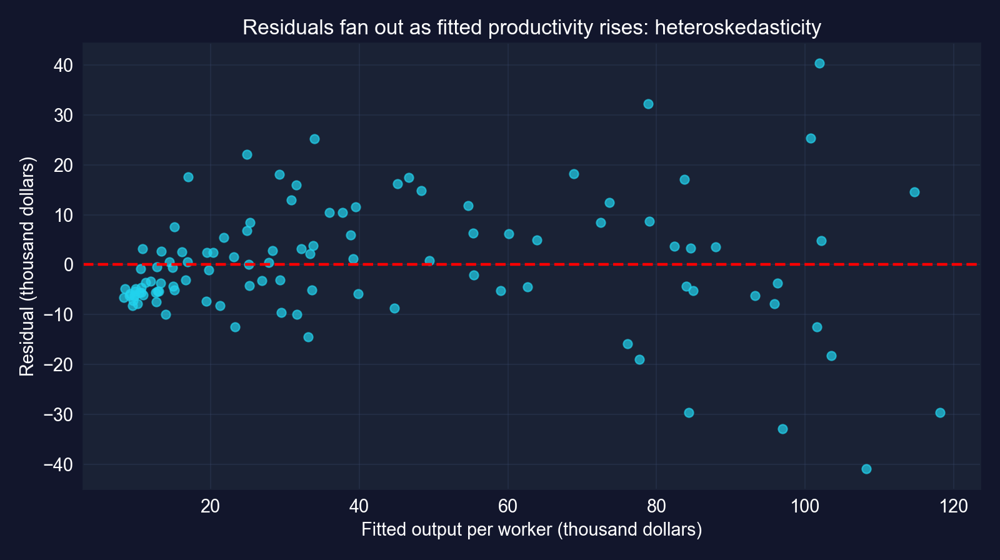
Residuals fan out: residual SD is $6,822 for the lower half of fitted values and $15,795 for the upper half. Poor countries also cluster below the line, a sign the straight line misses some curvature.
# continues from the previous block
threshold = data_2014["productivity"].median() # the chapter's split
high_income = data_2014[data_2014["productivity"] > threshold].copy()
developing = data_2014[data_2014["productivity"] <= threshold].copy()
robust_high = pf.feols("productivity ~ capital", data=high_income, vcov="HC1")
robust_dev = pf.feols("productivity ~ capital", data=developing, vcov="HC1")
for name, res in [("High-income", robust_high), ("Developing", robust_dev)]:
b, se = res.coef()["capital"], res.se()["capital"]
t_05 = (b - 0.5) / se; dfx = int(res._N) - len(res.coef()) # test beta2 = 0.5
print(name, int(res._N), b, se, res.tstat()["capital"], t_05, 2 * stats.t.sf(abs(t_05), dfx))| Group | N | Slope | Robust SE | \(t\) | 95% CI | \(t\) for \(\beta_2 = 0.5\) | \(R^2\) |
|---|---|---|---|---|---|---|---|
| High productivity | 54 | 0.1541 | 0.0172 | 8.97 | [0.1196, 0.1886] | −20.13 | 0.680 |
| Low productivity | 54 | 0.2059 | 0.0209 | 9.84 | [0.1639, 0.2479] | −14.06 | 0.722 |
| Full sample | 108 | 0.1995 | 0.0111 | 17.94 | [0.1774, 0.2215] | −27.03 | 0.870 |
HC1 SEs · split at median productivity, $32,781 · df = 52 in each half · all \(p < 0.001\)
Both slopes are significant and both are far below 0.5. Taken at face value, capital goes with less extra output in richer countries, consistent with diminishing returns.
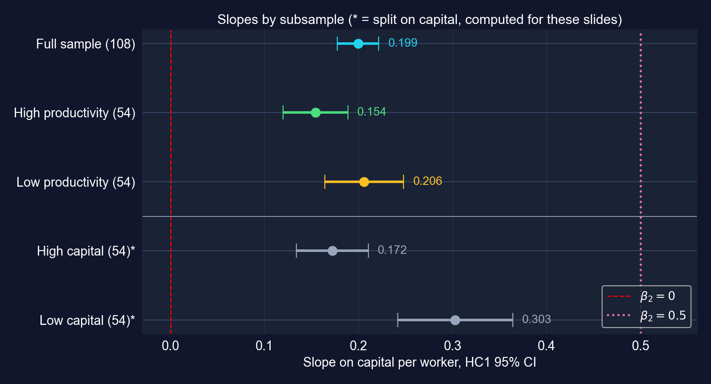
| Split on capital* | Slope | Robust SE |
|---|---|---|
| High capital (54) | 0.1720 | 0.0190 |
| Low capital (54) | 0.3026 | 0.0305 |
* computed for these slides · split at median capital, $108,046
Selecting on \(y\) truncates the outcome within each group and flattens both slopes. Splitting on \(x\) avoids that, and the low-capital slope comes out about 47% steeper than the chapter’s 0.206.
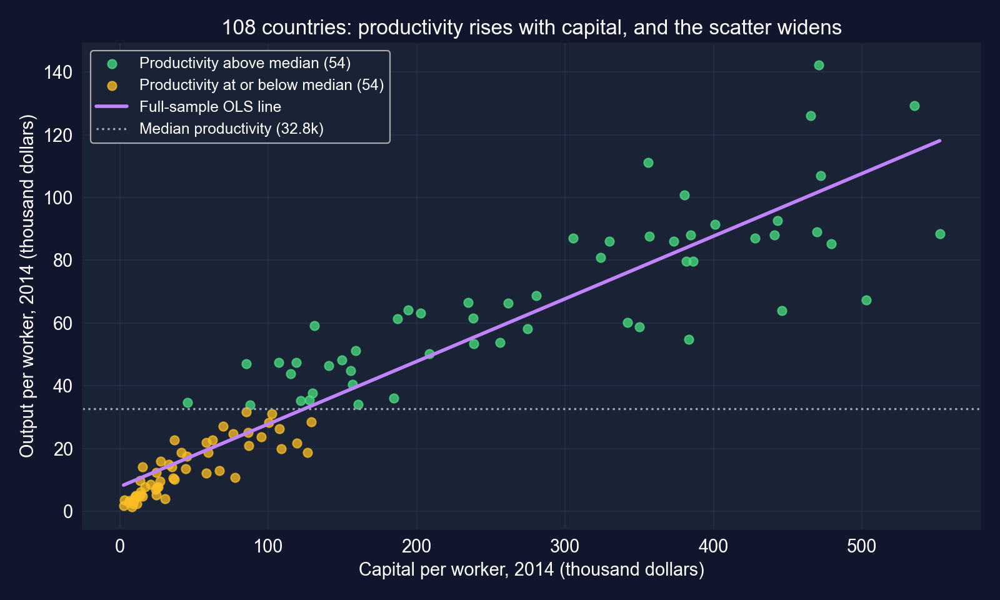
The picture shows everything the tables said: a strong positive slope, a widening scatter (heteroskedasticity) and a split that slices the cloud horizontally, along \(y\).
# continues from the previous block (model_convergence already fitted)
import matplotlib.pyplot as plt # plotting
import numpy as np # array handling
fitted = model_convergence.predict() # fitted productivity
resid = model_convergence.resid() # residuals
plt.scatter(fitted, resid, alpha=0.7) # residuals vs fitted (Task 5c)
plt.axhline(0, color="red", linestyle="--"); plt.xlabel("Fitted"); plt.ylabel("Residual"); plt.show()
low = fitted <= np.median(fitted) # split by fitted value, not by y
print(np.std(resid[low], ddof=1), np.std(resid[~low], ddof=1)) # residual SD by halfOutput: residual SD $6,822 (lower half of fitted values) vs $15,795 (upper half), the numbers behind the fan shape shown under Task 3.
Using a 2014 cross-section of 108 countries, I estimate the association between output per worker and physical capital per worker. Each additional $1,000 of capital per worker is associated with $199 more output per worker (HC1 robust SE = 0.011, \(t = 17.9\), \(p < 0.001\); 95% CI [0.177, 0.222]); capital explains 87% of the cross-country variation. The robust SE is 48% larger than the classical one, and residuals fan out with fitted productivity, so only robust inference is reported. The slope is far below the 0.5 benchmark (\(t = -27.0\)). Splitting the sample by capital per worker, the slope is 0.30 among capital-poor countries and 0.17 among capital-rich ones, consistent with diminishing returns. These are associations: capital moves with technology, human capital and institutions, and a levels regression does not test convergence.
A good summary reports magnitude, robust precision, the tests that matter and the limits of the design, in that order.
| Question | Answer |
|---|---|
| Is it precise? | robust SE 0.0111; CI [0.177, 0.222] |
| Is it real? | robust \(t = 17.94\): reject \(\beta_2 = 0\) |
| Which values are plausible? | not 0.5 (\(t = -27.0\)); below 0.30 (\(p < 0.001\), one-sided) |
| Does it matter? | one SD of capital ↔︎ $31,576 output per worker (77% of the mean) |
| Is the SE honest? | no with classical SEs: robust SE is 48% larger; residuals fan out |
Same toolkit as the houses, opposite lesson on the fourth row: here the robust SE is not optional.
DS4Bolivia · 339 municipalities · Tasks 1–6
Research question. Across Bolivia’s municipalities, is the association between nighttime lights and development statistically significant, and how precisely can we estimate it?
\[\text{imds}_i = \beta_1 + \beta_2\,\ln(\text{NTL per capita})_i + u_i\]
imds: Municipal Sustainable Development Index, 0–100ln_NTLpc2017: log of nighttime lights per capita, 2017Because \(x\) is in logs, \(\beta_2\) is the change in IMDS points when lights per capita are multiplied by \(e \approx 2.72\); doubling lights adds \(\beta_2 \ln 2 \approx 0.69\,\beta_2\) points.
!pip install -q pyfixest # pyfixest is not preinstalled in Colab
import pandas as pd, pyfixest as pf # data and OLS
from scipy import stats # t-distribution for manual tests
url_bol = "https://raw.githubusercontent.com/quarcs-lab/ds4bolivia/master/ds4bolivia_v20250523.csv"
bol = pd.read_csv(url_bol) # 339 municipalities, 351 columns
bol_key = bol[["mun", "dep", "imds", "ln_NTLpc2017"]].copy() # keep what we need
reg_data = bol_key[["imds", "ln_NTLpc2017"]].dropna() # complete cases only
print(f"Total municipalities: {len(bol_key)}")
print(f"Complete cases for regression: {len(reg_data)}")
reg_data.describe().round(3) # summary statistics| Variable | Mean | SD | Min | Max |
|---|---|---|---|---|
imds (0–100) |
51.16 | 6.76 | 35.70 | 80.20 |
ln_NTLpc2017 |
13.88 | 1.18 | 9.06 | 17.06 |
N = 333 complete cases out of 339 municipalities
IMDS spans 44.5 points; log lights span 8 units, which means lights per capita differ by a factor of about 3,000 between the dimmest and the brightest municipality.
# continues from the previous block (reg_data already built)
model = pf.feols("imds ~ ln_NTLpc2017", data=reg_data) # classical SEs
model.summary() # full table
t_stat = model.tstat()["ln_NTLpc2017"] # t for H0: beta2 = 0
p_value = model.pvalue()["ln_NTLpc2017"] # two-sided p-value
print(model.coef()["ln_NTLpc2017"], model.se()["ln_NTLpc2017"], t_stat, p_value)
print("Reject H0" if p_value < 0.05 else "Fail to reject H0")
print(model._r2) # R-squared| Variable | Coef. | SE | \(t\) | \(p\) |
|---|---|---|---|---|
| Intercept | 4.377 | 3.544 | 1.24 | 0.218 |
ln_NTLpc2017 |
3.370 | 0.254 | 13.25 | < 0.001 |
N = 333 · classical SEs · \(R^2 = 0.347\)
Reject \(H_0: \beta_2 = 0\): \(t = 13.25\).
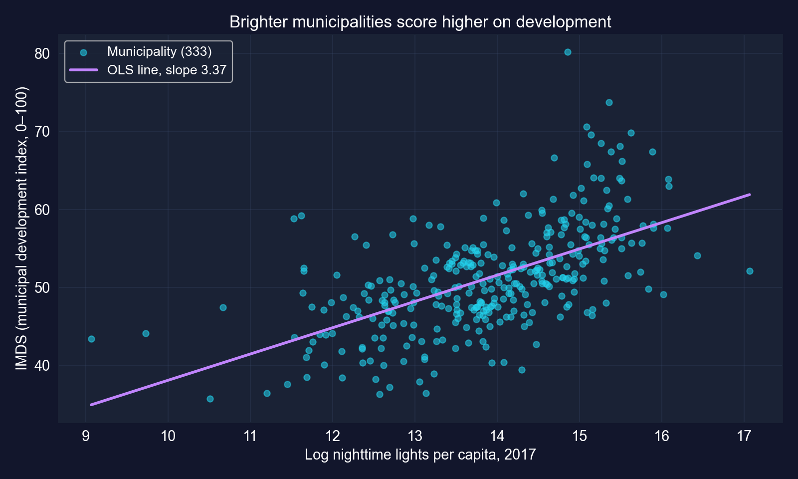
Brighter municipalities are measurably more developed, but lights explain only 35% of the variation in IMDS.
| Point estimate | 95% CI | Contains 0? |
|---|---|---|
| 3.370 | [2.87, 3.87] | no |
Correct reading: intervals built this way capture the true slope 95% of the time, and this one runs from 2.87 to 3.87 IMDS points per log unit of light. Zero is far outside it.
# continues from the previous block
model_robust = pf.feols("imds ~ ln_NTLpc2017", data=reg_data, vcov="HC1") # HC1 SEs
se_d, se_r = model.se()["ln_NTLpc2017"], model_robust.se()["ln_NTLpc2017"]
print(se_d, se_r, se_r / se_d) # SE ratio robust / default
print(model.tstat()["ln_NTLpc2017"], model_robust.tstat()["ln_NTLpc2017"])
print(model_robust.confint().loc["ln_NTLpc2017"]) # robust 95% CI
print(model_robust.se()["Intercept"], model_robust.pvalue()["Intercept"])| Variable | Coef. | Default SE | Robust SE | Ratio | Robust \(t\) | Robust 95% CI |
|---|---|---|---|---|---|---|
| Intercept | 4.377 | 3.544 | 4.135 | 1.167 | 1.06 | [−3.76, 12.51] |
ln_NTLpc2017 |
3.370 | 0.254 | 0.299 | 1.175 | 11.27 | [2.78, 3.96] |
N = 333 · HC1 SEs · robust \(p < 0.001\) for the slope, 0.291 for the intercept
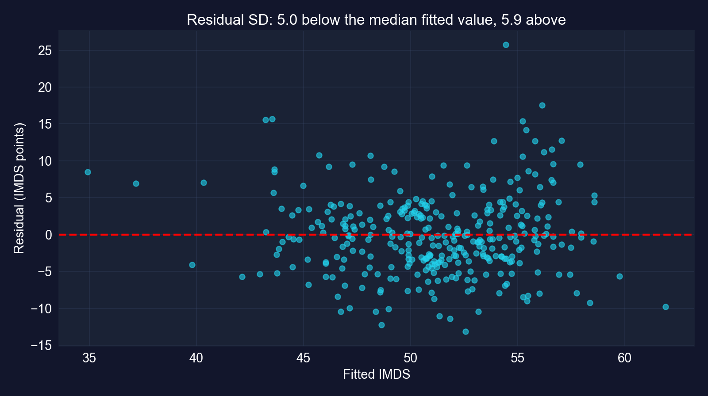
Moderate heteroskedasticity: the slope’s SE rises 17.5% and \(t\) falls from 13.25 to 11.27. Every conclusion survives; use the robust numbers from here on.
# continues from the previous block (model_robust already fitted)
beta_hat = model_robust.coef()["ln_NTLpc2017"] # 3.370
se_robust = model_robust.se()["ln_NTLpc2017"] # robust SE
df = int(model_robust._N) - len(model_robust.coef()) # 333 - 2 = 331
t_manual = (beta_hat - 5) / se_robust # H0: beta2 = 5
p_two_sided = 2 * stats.t.sf(abs(t_manual), df=df) # two-sided p-value
print(t_manual, df, p_two_sided)| \(H_0\) | \(t\) | df | \(p\) | Decision |
|---|---|---|---|---|
| \(\beta_2 = 5\) | −5.45 | 331 | \(9.8\times 10^{-8}\) | reject |
A slope of 5 is ruled out: it lies well above the robust interval [2.78, 3.96]. The test and the interval tell the same story.
| \(H_0\) | \(H_a\) | Robust \(t\) | One-sided \(p\) | Decision |
|---|---|---|---|---|
| \(\beta_2 \le 0\) | \(\beta_2 > 0\) | 11.27 | \(1.8\times 10^{-25}\) | reject |
Overwhelming evidence of a positive association. A one-sided test is legitimate here because the direction was stated before estimation, and the estimate points that way.
# continues from the previous block
imds_range = reg_data["imds"].max() - reg_data["imds"].min() # 44.5 points
imds_std = reg_data["imds"].std() # 6.76 points
beta = model_robust.coef()["ln_NTLpc2017"] # 3.370
print(beta, 100 * beta / imds_range, 100 * beta / imds_std) # per log unit
print(beta * 0.693, 100 * beta * 0.693 / imds_range) # doubling lights
ci_r = model_robust.confint().loc["ln_NTLpc2017"] # robust CI
print(ci_r.iloc[0] * 0.693, ci_r.iloc[1] * 0.693) # CI for doubling
sd_x = reg_data["ln_NTLpc2017"].std() # 1.18 log units
print(beta * sd_x, beta * sd_x / imds_std, model._r2) # one-SD contrast, R²| Comparison | IMDS change | Relative to |
|---|---|---|
| +1 log unit of lights (×2.72) | 3.37 | 7.6% of the IMDS range; 50% of its SD |
| Doubling lights (+0.693) | 2.34 | 5.2% of the range · robust CI [1.93, 2.74] |
| +1 SD of log lights (1.18) | 3.98 | 0.59 SD of IMDS |
Range = 44.5 points, SD = 6.76 · CI for doubling and one-SD row computed for these slides · \(R^2 = 0.347\)
Statistical significance here is beyond doubt; economic significance is moderate; causality is not established. Three different questions, three different answers.
| Question | Answer |
|---|---|
| Is it precise? | robust SE 0.299; CI [2.78, 3.96] |
| Is it real? | robust \(t = 11.27\): reject \(\beta_2 = 0\); positive one-sided, \(p < 0.001\) |
| Which values are plausible? | not 5 (\(t = -5.45\)) |
| Does it matter? | doubling lights ↔︎ +2.3 IMDS points (5.2% of the range): moderate |
| Is the SE honest? | robust SE 17.5% larger: report it; department-level correlation not yet addressed |
Same five rows, a third pattern: precise and real, but modest, and the SE still has a caveat (spatial correlation) that HC1 cannot fix.
Act III · Synthesis
| Houses (7.1–7.7) | Countries (Case 1) | Municipalities (Case 2) | |
|---|---|---|---|
| N | 29 | 108 | 333 |
| Slope \(b_2\) | 73.771 | 0.1995 | 3.370 |
| Classical SE | 11.175 | 0.0075 | 0.254 |
| Robust (HC1) SE | 11.330 | 0.0111 | 0.299 |
| Robust / classical | 1.014 | 1.484 | 1.175 |
| Robust \(t\) | 6.51 | 17.94 | 11.27 |
| Robust 95% CI | [50.52, 97.02] | [0.1774, 0.2215] | [2.78, 3.96] |
| \(R^2\) | 0.617 | 0.870 | 0.347 |
Every slope is highly significant, yet the SE correction ranges from 1% to 48%. Whether heteroskedasticity matters is an empirical question, so the robust SE should be the default.
Each one is a real trap, and each has a slide in this deck that shows the correct reading with the chapter’s own numbers.
Objection. “\(t = 17.9\), \(p < 0.001\), \(R^2 = 0.87\): capital clearly drives productivity, and we know the effect to the third decimal.”
Response. The classical SE overstated precision by 48%, the residuals fan out and curve, the sample split biased the group slopes, and nothing in a cross-section of levels identifies a causal effect. Significance tells you the association is not noise. It does not tell you how big it is, how precise it truly is, or why it exists.
Read every regression table with four questions: how big, how precise (with an honest SE), how plausible are the alternatives, and what would make it causal.
vcov="HC1" by default; look at the residuals; a large gap signals a model problem